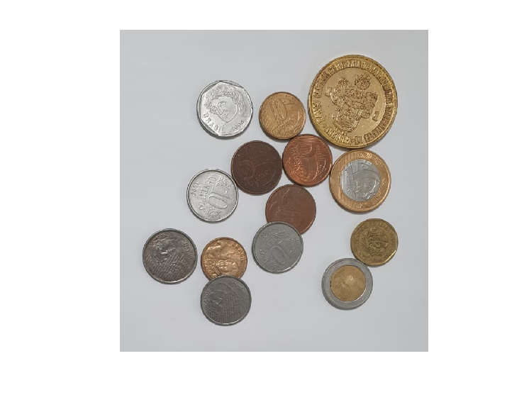

Estudante: André Alfonso Peixoto
GONZALEZ, R; WOODS, R; EDDINS, S. Digital Image Processing Using MATLAB 2. 2. ed. Gatesmark Publishing, 2009. Mathworks Stack Exchange Wikipedia
%{
* Aplicar o PCA para compressão de imagens,utilizando uma quantidade de componentes principais.
-- graficar numero de componetes principais vs PSNR
-- utilize uma imagem de sua preferencia
-- comente
%}
pkg load signal;
pkg load symbolic;
pkg load image;
pkg load statistics;
%pkg load tisean;
c_img = imread("mycoins.jpeg");
g_image = c_img;
figure;
imshow(g_image);
mypsnr =[]; vetor_nComp = 5:5:90; g_image_d = double(g_image); %Conversão da imagem para double g_image_d_m = mean(g_image_d); %Cálculo da média da imagem g_image_d_m_adjusted = (g_image_d-g_image_d_m); %Subtração da imagem média [coeff,score,~,~,~] = pca(g_image_d_m_adjusted); %Aplicação do PCA
error: S must be a realmatrix in: mypsnr =[]; vetor_nComp = 5:5:90; g_image_d = double(g_image); %Conversão da imagem para double g_image_d_m = mean(g_image_d); %Cálculo da média da imagem g_image_d_m_adjusted = (g_image_d-g_image_d_m); %Subtração da imagem média [coeff,score,~,~,~] = pca(g_image_d_m_adjusted); %Aplicação do PCA
for nComp = vetor_nComp reconstruction = score(:,1:nComp)*coeff(:,1:nComp); final_reconstruction = (reconstruction+g_image_d_m); %Soma de imagem e imagem médiag final_reconstruction = uint8(final_reconstruction); %Exibição da figura figure; imshow(final_reconstruction); title(num2str(nComp)); mypsnr = [mypsnr psnr(final_reconstruction,g_image)]; %Cálculo do PSNR end %%PSNR figure; plot(vetor_nComp,mypsnr,"*-");
error: 'vetor_nComp' undefined near line 1, column 1
in:
for nComp = vetor_nComp
reconstruction = score(:,1:nComp)*coeff(:,1:nComp);
final_reconstruction = (reconstruction+g_image_d_m); %Soma de imagem e imagem médiag
final_reconstruction = uint8(final_reconstruction);
%Exibição da figura
figure;
imshow(final_reconstruction);
title(num2str(nComp));
mypsnr = [mypsnr psnr(final_reconstruction,g_image)]; %Cálculo do PSNR
end
%%PSNR
figure;
plot(vetor_nComp,mypsnr,"*-");